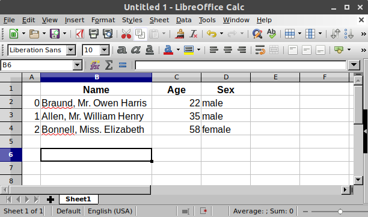

pandas 处理哪种数据？#
我想开始使用 pandas
In [1]: import pandas as pd
要加载 pandas 包并开始使用它，请导入该包。社区约定 pandas 的别名为
pd，因此将 pandas 加载为pd被视为所有 pandas 文档的标准做法。
pandas 数据表表示#

我想存储泰坦尼克号的乘客数据。对于一部分乘客，我知道他们的姓名（字符）、年龄（整数）和性别（男/女）数据。
In [2]: df = pd.DataFrame( ...: { ...: "Name": [ ...: "Braund, Mr. Owen Harris", ...: "Allen, Mr. William Henry", ...: "Bonnell, Miss. Elizabeth", ...: ], ...: "Age": [22, 35, 58], ...: "Sex": ["male", "male", "female"], ...: } ...: ) ...: In [3]: df Out[3]: Name Age Sex 0 Braund, Mr. Owen Harris 22 male 1 Allen, Mr. William Henry 35 male 2 Bonnell, Miss. Elizabeth 58 female
要手动将数据存储在表中，请创建一个
DataFrame。当使用 Python 列表字典时，字典的键将用作列标题，每个列表中的值将用作DataFrame的列。
一个 DataFrame 是一个二维数据结构，可以在列中存储不同类型的数据（包括字符、整数、浮点值、分类数据等）。它类似于电子表格、SQL 表或 R 中的 data.frame。
该表有 3 列，每列都有一个列标签。列标签分别为
Name、Age和Sex。列
Name由文本数据组成，每个值都是字符串；列Age是数字；列Sex是文本数据。
在电子表格软件中，我们数据的表格表示会非常相似
DataFrame 中的每一列都是一个 Series#

我只对处理列
Age中的数据感兴趣In [4]: df["Age"] Out[4]: 0 22 1 35 2 58 Name: Age, dtype: int64
当选择 pandas
DataFrame的单个列时，结果是一个 pandasSeries。要选择列，请使用方括号[]中的列标签。
注意
如果您熟悉 Python 字典，选择单个列与基于键选择字典值非常相似。
您也可以从头开始创建一个 Series
In [5]: ages = pd.Series([22, 35, 58], name="Age")
In [6]: ages
Out[6]:
0 22
1 35
2 58
Name: Age, dtype: int64
pandas Series 没有列标签，因为它只是 DataFrame 的单个列。一个 Series 确实有行标签。
对 DataFrame 或 Series 执行操作#
我想知道乘客的最大年龄
我们可以通过选择
Age列并应用max()来在DataFrame上执行此操作。In [7]: df["Age"].max() Out[7]: 58
或者对
Series执行此操作。In [8]: ages.max() Out[8]: 58
正如 max() 方法所演示的，您可以对 DataFrame 或 Series 执行 操作。pandas 提供了许多功能，每个功能都是您可以应用于 DataFrame 或 Series 的一个 方法。由于方法是函数，请不要忘记使用括号 ()。
我对数据表的数值数据的基本统计信息感兴趣
In [9]: df.describe() Out[9]: Age count 3.000000 mean 38.333333 std 18.230012 min 22.000000 25% 28.500000 50% 35.000000 75% 46.500000 max 58.000000
describe()方法提供了DataFrame中数值数据的快速概览。由于Name和Sex列是文本数据，它们默认不被describe()方法考虑在内。
许多 pandas 操作返回一个 DataFrame 或一个 Series。describe() 方法是返回 pandas Series 或 pandas DataFrame 的 pandas 操作的一个示例。
在用户指南的关于 使用 describe 进行聚合 的部分中查看有关 describe 的更多选项。
注意
这只是一个起点。与电子表格软件类似，pandas 将数据表示为带有列和行的表格。除了数据表示，pandas 还支持您在电子表格软件中进行的数据操作和计算。请继续阅读后续教程以开始使用！
记住
导入包，即
import pandas as pd数据表存储为 pandas
DataFrameDataFrame中的每一列都是一个Series您可以通过将方法应用于
DataFrame或Series来执行操作
关于 DataFrame 和 Series 的更详细解释可在数据结构介绍中找到。